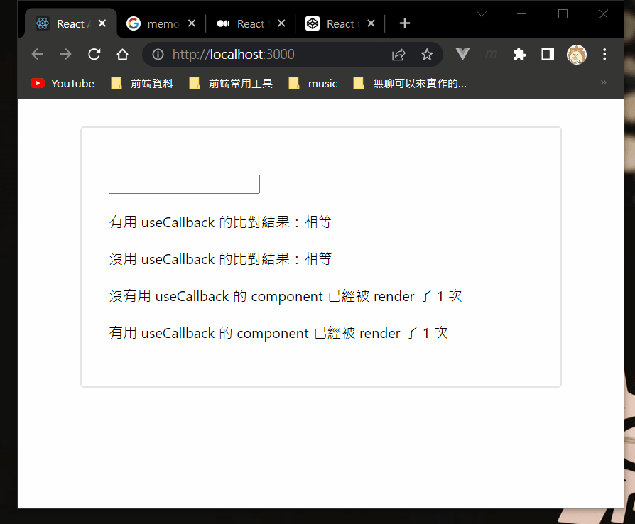

也是跟效能有關。
簡述
把 function 給記起來，如果 dependencies 沒有變，就不會重新宣告新的 function。
useCallback 說白話一點就是上面那樣子，它跟 useEffect 有點像，可以在第二個參數傳入 dependencies，告訴 react 只有在 dependencies 變的時候才幫我宣告新的 function，不然就沿用原本的就好。
接下來的範例會稍微複雜一點，所以先做段解說：
- 宣告兩個 function，一個會用
useCallback 一個不會。
- 利用 ref 來把一開始的 function 給記住
- 每次 re-render 時就跟一開始的 function 做比對
另外這邊一樣有用到 memo，所以要記得 memo 的特性是「當 props 改變時才會 re-render」。
1
2
3
4
5
6
7
8
9
10
11
12
13
14
15
16
17
18
19
20
21
22
23
24
25
26
27
28
29
30
31
32
33
34
35
36
37
38
39
40
41
42
43
44
45
46
47
48
49
50
51
52
53
54
55
56
57
58
59
60
61
62
63
64
65
66
|
const checkIsEqual = (a, b) => a === b ? "相等" : "不相等";
const Component = memo(props => {
const counter = useRef(0);
const message = props.isUseCallback
? "有用 useCallback"
: "沒有用 useCallback";
counter.current++;
return (
<div>
{message} 的 component 已經被 render 了 {counter.current} 次
</div>
);
});
function App() {
const [value, setValue] = useState();
const [someArg, setSomeArg] = useState("argument");
const handleSomethingUseCallback = useCallback(() => {}, [someArg]);
const handleSomething = () => {};
const refHandleSomethingUseCallback = useRef(handleSomethingUseCallback);
const refHandleSomething = useRef(handleSomething);
const handleChange = (e) => setValue(e.target.value);
return (
<div className="app">
<input type="text" value={value} onChange={handleChange} />
<div>
有用 useCallback 的比對結果：
{checkIsEqual(
refHandleSomethingUseCallback.current,
handleSomethingUseCallback
)}
</div>
<div>
沒用 useCallback 的比對結果：
{checkIsEqual(
refHandleSomething.current,
handleSomething
)}
</div>
<Component
isUseCallback={false}
handleSomething={handleSomething}
/>
<Component
isUseCallback={true}
handleSomethingUseCallback={handleSomethingUseCallback}
/>
</div>
);
}
|

它的流程是這樣：
- 輸入文字，改變
value 的 state，觸發 re-render
- 沒有用
useCallback 的 function 會被重新宣告，所以 Compnonent 會被 re-render（因為 props 改變）
- 接著拿
useRef 存的值跟這次的 function 比對，得到 false
而有用 useCallback 的 function 因為 dependencies 沒有變（someArg），所以不會被重新宣告，也不會 re-render。而比對的部分也會是 true，因為 function 的值沒有改變。
useCallback 的用法就是這樣，不過最後要特別強調一件事情：
關於 useCallback 的 dependencies，一定要記得把 function 中有用到的依賴變數 or function 放進去，不然有可能會出現靈異現象（沒有重新宣告，所以拿不到最新的 state）
實際應用
接著用一個實際案例來示範 useCallback 會用在什麼樣的地方。
一個最常見的例子是「串接 API」，最基本的 pattern 會長這樣：
1
2
3
4
5
| useEffect(() => {
fetch(...)
.then(res => res.json())
.then(json => setList(json))
}, [])
|
不過如果想用 async / await 的話就比較麻煩了，因為 useEffect 本身不可以直接用這個語法。第一種方式是直接宣告在裡面，像這樣：
1
2
3
4
5
6
7
8
| useEffect(() => {
const getList = async () => {
const res = await fetch(...)
const json = await res.json()
setList(json)
}
getList()
}, [])
|
這樣子做沒什麼問題，唯一的缺點是可讀性不佳，所以我們通常會希望能宣告在外面，像這樣：
1
2
3
4
5
6
7
8
9
10
11
| function App () {
const getList = async () => {
const res = await fetch(...)
const json = await res.json()
setList(json)
}
useEffect(() => {
getList()
}, [])
}
|
做到這邊以後，你就會發現 ESLint 很熱情地告訴你：
哈囉，你確定不要把 getList 這東西放到 dependencies 裡嗎？
沒有想太多的你就乖乖照做了，結果就陷入「無窮迴圈」了 XD
這邊我不解釋太多，但主要的原因是因為「Reference」。
簡單來說就是每一次 re-render 時都會重新宣告 getList 這個 function，而每一次的 function 都會是不一樣的 function。
如果你不太懂的話，試著想想看這個例子大概就明白了：
1
2
3
| const a = () => {}
const b = () => {}
console.log(a === b)
|
所以這時候就輪到 useCallback 出場了，我們可以改寫成這樣子：
1
2
3
4
5
6
7
8
9
10
11
| function App () {
const getList = useCallback(async () => {
const res = await fetch(...)
const json = await res.json()
setList(json)
}, [])
useEffect(() => {
getList()
}, [getList])
}
|
附註：這邊的 getList 因為沒有用到其他相關的 variable 或 state，所以 dependencies 是空的，也就是說不會被重新宣告。但如果你在實作時有這個需求，請務必記得加上去，避免出現非預期的結果。
useCallback 在這邊的任務就是「檢查 dependencies 有沒有變？」，如果沒有，就會回傳 cache 住的 function（就是原本的那個啦），反之則重新宣告一個新的 function。
既然現在 function 不會被重新宣告，那麼就可以把它填入 useEffect 的 dependencies 中，不會再進入無限迴圈囉！